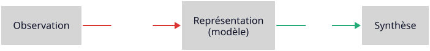
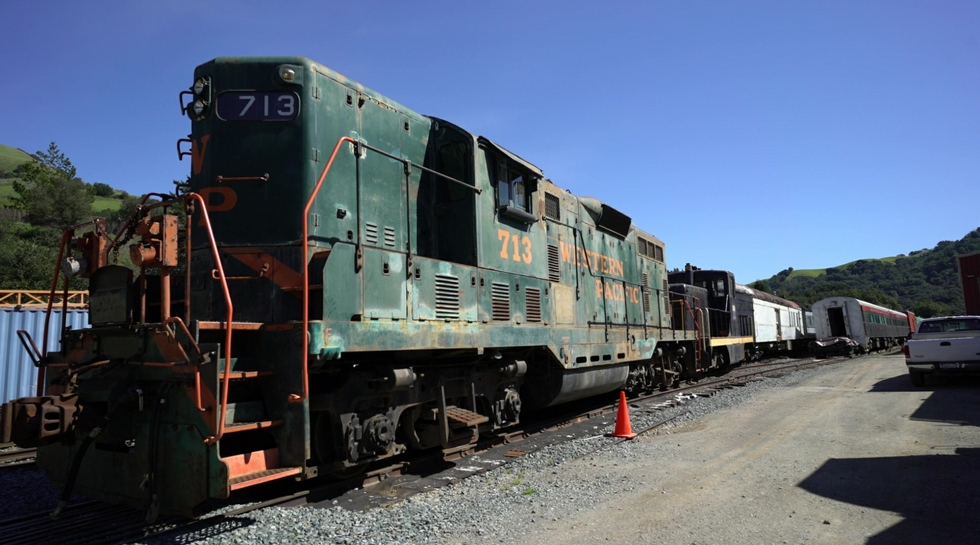
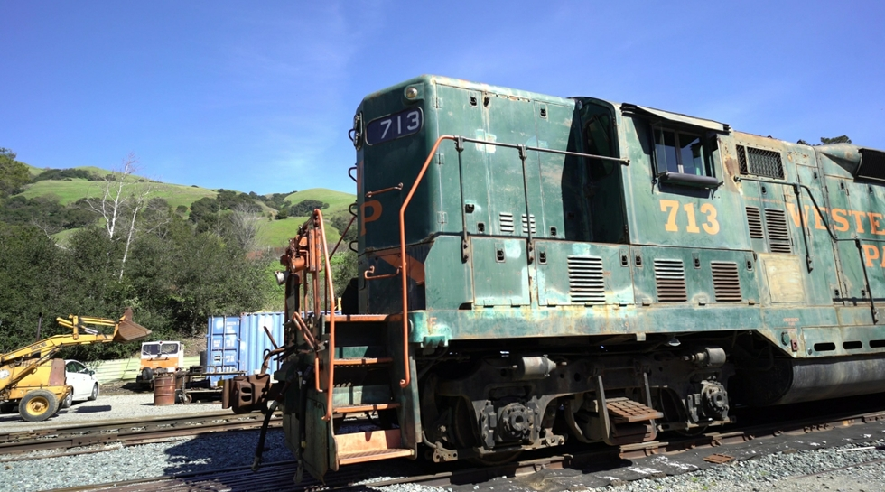
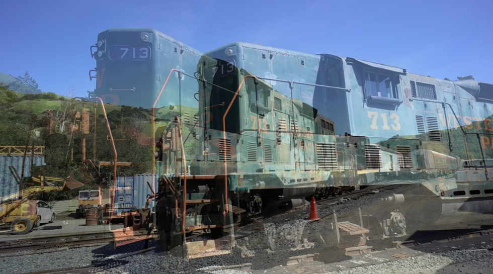
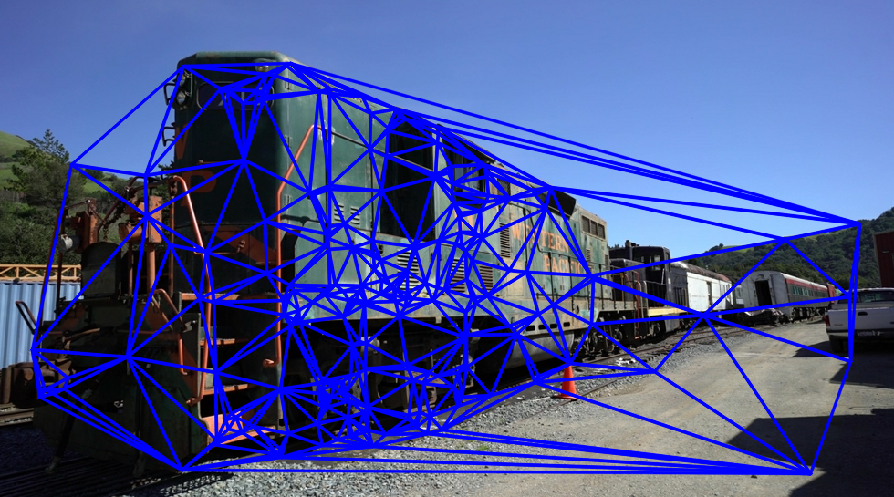
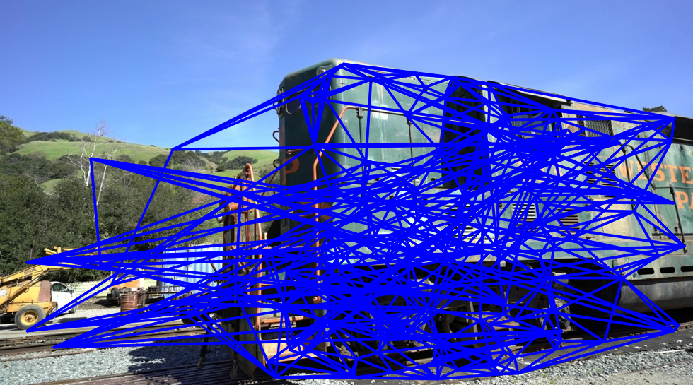
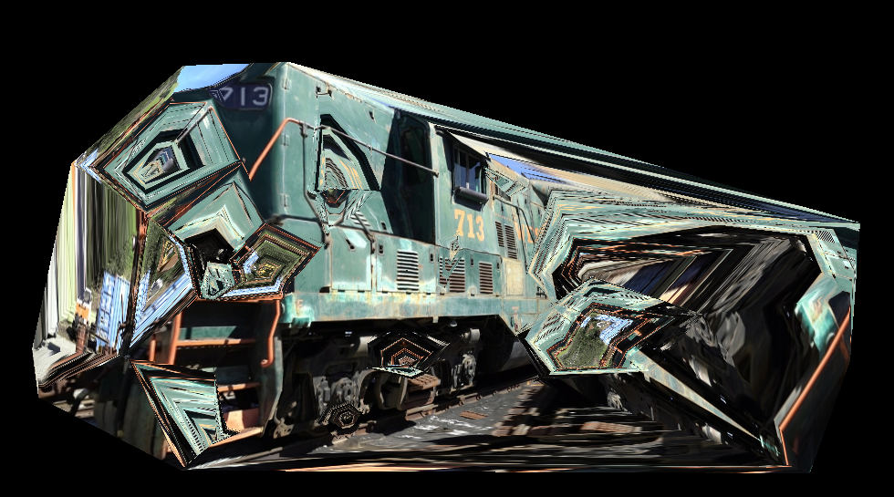
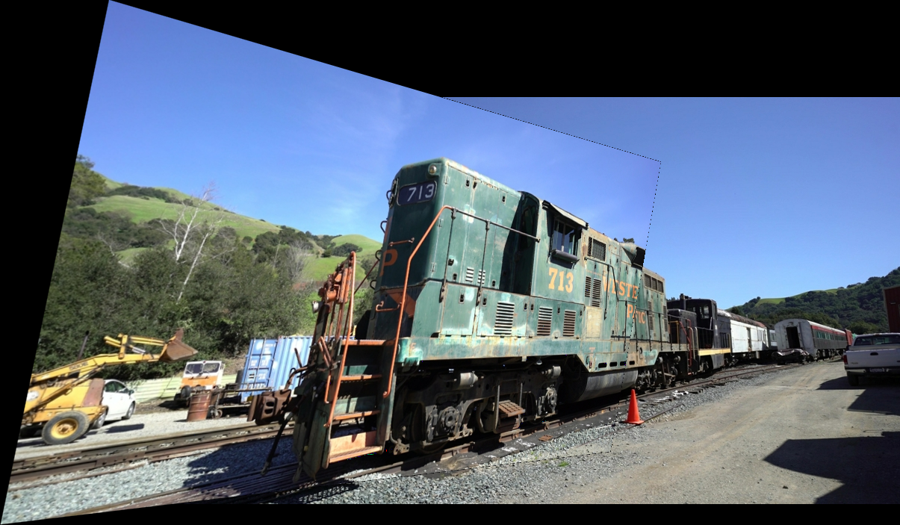

Synthèse d’Images par Rendu Inverse
CM1: Une image vaut mille mots (ou inversement)
Une image vaut mille mots
(ou l’inverse)
Une image montre.
Mais comprend-on ce qu’elle contient ?
Est-ce qu’une image décrit le monde ?
Ou est-ce que nous projetons un monde dans l’image ?
Voir, c’est inférer
Une image est la projection d’un monde latent.
latent : caché, non observable directement
Mise en situation
Vous êtes ingénieur Computer Graphics.
Votre ami journaliste vous demande de lui faire (gratuitement) un petit pipeline pour présenter à son redacteur en chef des reportages plus immersifs.
Il n’a que son appareil photo
Que faites vous ?
🎯 Objectif
À partir de photos prises avec un appareil classique
produire une scène interactive consultable dans un navigateur.
Donc :
- pas d’app spéciale lecteur
- partage par lien
- marche sur mobile & desktop & multi-OS
- assez “WoW” pour convaincre un rédacteur en chef
🧭 Pipeline minimal viable
👉 Photogrammétrie nettoyage export web intégration dans une page.
Exemple
Fil directeur (2D → 3D → continu)
Examen
Les TP introduisent les questions conceptuelles du cours. L’examen vérifie que vous avez compris ces questions, pas que vous avez refait les TP.
Compétences acquisent :
- Compréhension conceptuelle du rendu inverse et des représentations
- Numérisation de petits objets
- Création d’un portefolio
Méthode de pensée du cours
On va progresser par besoin de structure :
- En 2D, on “triche” intelligemment : on manipule l’image.
- Puis on se heurte à des limites on introduit la 3D (photogrammétrie).
- Puis on compare des représentations modernes pour le rendu.
👉 Aujourd’hui : borne basse = image image.
Sortie attendue à la fin du CM1
Vous devez pouvoir répondre à :
- Qu’est-ce que “rendu inverse” dans notre sens ?
- Pourquoi l’inversion est mal posée ?
- Qu’est-ce qu’on peut déjà faire en 2D (sans 3D) ?
- Quels artefacts sont structurels (donc inévitables en 2D) ?
BLOC 1
Qu’est ce que le rendu inverse ?
Tout d’abord, qu’est ce que le rendu normale ?
On part d’une scène (géométrie + apparence) + caméra on obtient une image.
👉 Rendu direct : représentation → image.
Tout d’abord, qu’est ce que le rendu normal ?
\[ \color{#00e0ff}{I} = \color{#ffb000}{R}\!\left(\color{#00ff88}{\theta}\right) \]
où :
- \(\color{#00ff88}{\theta}\) = paramètre de la scène
- \(\color{#ffb000}{R}\) = fonction de rendu
- \(\color{#00e0ff}{I}\) = image
Rendu normal :
\[ \color{#00e0ff}{I} = \color{#ffb000}{R}\!\left(\color{#00ff88}{\theta}\right) \]
Okay mais c’est quoi le rendu inverse du coup ?
\[ \text{C'est}\quad \color{#00e0ff}{I} = \frac{1}{\color{#ffb000}{R}\!\left(\color{#00ff88}{\theta}\right)} \quad ? \]
Nop
\[ \text{C'est}\quad \color{#ffb000}{R} = \frac{\color{#00e0ff}{I}}{\color{#00ff88}{\theta}} \quad ? \]
Nop
Le rendu inverse consiste à construire
une représentation interne
d’une scène à partir d’observations,
afin de pouvoir ensuite re-rendre (prédire)
de nouvelles vues.
Tout d’abord, partons d’un fait
Tout système réaliste de production d’image suppose une représentation du monde, obtenue par inférence (humaine ou algorithmique), puis un rendu.

Exemple de l'appareil photo :
Paysage projection sur capteur et mémoire interne image jpeg
Exemple de la modélisation 3D :
Représentation mentale modélisation sur Blender rendu
👉 L’humain aussi est une machine d’interprétation.
Le rendu inverse n’est pas une invention moderne.
Le cerveau le fait depuis toujours.
Les méthodes numériques sont des tentatives pour reproduire ça.
Dans ce sens :
- le cerveau fait du rendu inverse
- l’artiste 3D fait du rendu inverse
- la photogrammétrie fait du rendu inverse
- NeRF fait du rendu inverse
Cette inférence produit une représentation à qualité variable.
- 2D inférence faible rendu
- 3D inférence géométrique rendu
- NeRF inférence volumétrique rendu
Ce sont des formes différentes du même geste fondamental :
inférer une structure générative à partir d’observations.
Introduction à la synthèse d’images réalistes
Mais pour synthétiser, il faut :
- choisir une représentation
- comprendre ce qu’est une image
- comprendre ce qui la rend plausible
Donc passer par l’inversion n’est pas un détour.
C’est une fondation.
Rendu inverse : idée générale
On observe une image (ou plusieurs) et on cherche une représentation compatible.
On choisit une représentation “juste assez structurée” pour synthétiser de nouvelles vues.
Rendu inverse : idée générale
\[ \hat{\theta} = \arg\min_{\theta} \; \| \color{#ffb000}{R}(\color{#00ff88}{\theta}) - \color{#00e0ff}{I_{\text{obs}}} \|^2 \]
où :
- \(\color{#00ff88}{\theta}\) = paramètre de la scène
- \(\color{#ffb000}{R}\) = fonction de rendu
- \(\color{#00e0ff}{I_{\text{obs}}}\) = image observée
On cherche les paramètres de scène qui, une fois rendus, produisent une image la plus proche possible de ce que l’on observe.
Inverser \(\color{#ffb000}{R}\) est impossible analytiquement on passe par l’optimisation.
Point clé : on ne reconstruit pas “la vérité”
- Une image est compatible avec plusieurs scènes / explications.
- On cherche une représentation utile au rendu (et pas une vérité physique).
👉 On juge une inversion par sa capacité à re-rendre (prédire) correctement.
Pourquoi l’inversion est difficile ?
Parce que beaucoup d’informations sont “perdues” dans l’image :
- profondeur (3D 2D)
- occlusions (ce qui est caché)
- ambiguïtés (textures répétées, surfaces planes…)
- dépendance au point de vue
En général : problème mal posé (pas de solution unique).
Plusieurs \(\color{#00ff88}{\theta}\) donnent la même \(\color{#00e0ff}{I}\).
Qu’entend t’on par réalisme ?
Le réalisme n’est pas une technique.
C’est un choix de représentation.
Les shaders, le ray tracing, NeRF, Gaussian Splatting…
ne sont pas seulement des algorithmes.
Ce sont des manières différentes de représenter la scène et la lumière.
👉 Le réalisme dépend moins de la technique que de la représentation du monde, et chaque méthode impose une ontologie implicite du monde.
Par exemple
Rasterisation classique
Représentation = surfaces polygonales + illumination locale.
Ray tracing
Représentation = simulation explicite des interactions lumière–matière.
NeRF
Représentation = champ continu volumétrique appris.
Ce ne sont pas juste des “techniques”.
Ce sont des hypothèses sur :
- ce qu’est une scène
- ce qu’est la lumière
- ce qu’est une image
Pour résumer
Le rendu direct est mécanique.
Le rendu inverse est interprétatif.
Le rendu inverse peut être compris comme :
Toute tentative de reconstruire une structure du monde à partir d’images.
Respiration
BLOC 2
On inverse l’image… ou nos hypothèses ?
Prenons deux images d’une même scène


Comment créer une nouvelle image à partir de là ?
Interpolation naïve (blending)
On mélange pixel à pixel : \[ I_\alpha = (1-\alpha)\color{#00ff88}{I_1} + \alpha \color{#ffb000}{I_2},\quad \alpha\in[0,1] \]

Interpolation naïve (blending)
Artefact typique : ghosting / double contours.
Pourquoi ? Parce qu’on mélange des pixels qui ne correspondent pas au même point de la scène.
Ce qu’il manque au blending :
“qui correspond à quoi”
Pour synthétiser proprement, il faut une notion de correspondances :
- ce pixel dans (\(\color{#00ff88}{I_1}\)) ce pixel dans (\(\color{#ffb000}{I_2}\))
- autrement dit : une déformation (warping) entre images
👉 Première grande idée du cours : correspondances 2D–2D.
Warping : concept (sans formalisme lourd)
On veut une fonction (\(W\)) qui déplace les pixels :
\[ I_1 \xrightarrow[]{W} I_{1\rightarrow 2} \]
Intuition :
- si (\(W\)) est bonne, les structures s’alignent,
- ensuite le blending devient beaucoup plus cohérent.
Warping On essaye
Ok et si on essayé de coller les images mais en cherchant au préalable des correspondances ?
Pour cela, SIFT est reconnu comme l’un des meilleurs rapport qualité / prix

Ok, on trouve 281 correspondances !!
Ok, maintenant il faut coller les deux images…
On a 281 correspondances.
Mais elles sont ponctuelles.
Entre ces points ?
On ne sait rien.
👉 Il faut interpoler.
Triangulation
Une approche consiste à trianguler les points correspondants.
On découpe l’image en triangles à partir des correspondances.
Dans chaque triangle :
- on calcule l’affine entre triangle source et destination
- on applique la transformation aux pixels
- on remplit progressivement l’image cible
Les correspondances définissent déjà une structure commune.
👉 Mais pas de loi globale.
Triangulation structure locale


Warping local
Puis, on aligne triangle par triangle.
Une fois l’image reconstruite, on peut fusionner avec l’image de référence.

Le problème
Pas de cohérence géométrique globale.
- Des correspondances peuvent etre fausses
- Deux triangles voisins peuvent se déformer différemment.
- Les lignes droites peuvent devenir brisées.
- Les régions peu contraintes deviennent instables.
Ce qu’on peut retenir
- Blending naïf ghosting
- Il faut aligner avant de mélanger
- Warping local (
très) inconsistent
Pause
BLOC 3
Bon bein comment on fait du coup ?
Idée clé
Si une scène est plane, alors deux images prises sous des points de vue différents sont liées par une transformation projective.
On peut écrire :
\[ \color{#ffb000}{x'} \sim \color{#00e0ff}{H}\color{#00ff88}{x} \]
où :
- \(\color{#00ff88}{x}\) = point dans la première image
- \(\color{#ffb000}{x'}\) = point correspondant dans la seconde image
- \(\color{#00e0ff}{H}\) = matrice de transformation projective plane (3×3)
👉 Ce qu’on appelle une
homographie
Interprétation
Une homographie permet :
- rotation
- translation
- changement de perspective
- redressement de plan
Mais uniquement si les points appartiennent à un même plan.
Exemple


Intuition géométrique
Si tout est sur un plan :
La transformation est entièrement décrite par \(\color{#00e0ff}{H}\).
Ce que cela permet
- Redresser une façade
- Faire un panorama
- Corriger une perspective
- Warper une image vers un nouveau point de vue
Une fois H estimée
On applique la transformation à tous les pixels :
\[ \mathbf{x}' \sim H \mathbf{x} \]
Mais attention :
- on travaille en coordonnées homogènes
- on renormalise après multiplication
\[ (x', y', w') \rightarrow \left(\frac{x'}{w'}, \frac{y'}{w'}\right) \]
En pratique (OpenCV) :
👉 Tous les pixels suivent la même loi géométrique.
En pratique Correspondances

En pratique Correspondances + RANSAC

En pratique blending

En pratique résultat

En pratique résultat
Synthèse 2D “guidée” (le cœur du TP1)
Pipeline minimal : correspondances warping fusion.
Correspondances : ce que c’est, ce que ça fait
Définition simple
Une correspondance 2D–2D = une paire de points :
\[ \mathbf{x}_1 \in \color{#00ff88}{I_1} \quad \leftrightarrow \quad \mathbf{x}_2 \in \color{#ffb000}{I_2} \]
Interprétation : "même point du monde" vu dans deux images.
Qualité des correspondances = qualité du rendu
- Si elles sont fausses déformations absurdes.
- Si elles sont mal réparties zones “flottantes” / non contraintes.
- Si elles couvrent bien l’image warping plus stable.
TP1 : vous verrez directement l’impact de la densité et de la distribution.
Correspondances = structure implicite
En établissant des correspondances,
nous définissons implicitement une représentation commune entre les deux images.
Sans 3D explicite, les correspondances imposent déjà une structure.
Une mauvaise correspondance
= une fausse hypothèse sur le monde.
D’où viennent les correspondances ?
Deux sources :
- 👤 Humaines (cliquées)
- 🤖 Automatiques (SIFT, etc.)
Les correspondances automatiques contiennent des erreurs.
On utilise généralement un filtre
On impose une cohérence géométrique minimale.
RANSAC = éliminer les correspondances incohérentes avec un modèle global.
- Correspondances = même point du monde
Ce que l’homographie change
- Une seule transformation pour toute l’image
- Une géométrie globale cohérente
- Les droites restent droites
👉 On passe d’une structure locale fragmentée à une loi géométrique unique.
Mais…
Cette cohérence repose sur une condition forte.
La scène est plane ou le mouvement est une rotation pure.
Sinon : la cohérence s’effondre.
Respiration
Plus le modèle est global,
plus la contrainte géométrique est forte.
BLOC 4
Limites 2D besoin de structure
Extrapolation 2D : “sortir de l’intervalle”
Interpolation : on reste “entre” les vues.
Extrapolation : on pousse au-delà.
Pourquoi c’est plus dur ?
- on invente des zones jamais vues,
- les occlusions explosent,
- les erreurs de correspondances s’amplifient.
Occlusions : le mur conceptuel de la 2D
En 2D, une image ne contient pas explicitement :
- l’ordre en profondeur,
- la visibilité,
- ce qui est devant ou derrière.
La 2D ne code pas la profondeur.
Conséquence :
- trous, déchirures (disocclusions),
- duplications,
- incohérences locales.
👉 Ces artefacts ne sont pas “des bugs” : ce sont des limites structurelles.
Ce que la 2D sait faire (très bien)
- interpolation douce entre vues proches
- petites variations de point de vue
- morphing contrôlé (si correspondances propres)
Ce que la 2D ne peut pas résoudre proprement
- grandes variations de point de vue
- fortes occlusions / disocclusions
- objets fins / transparences / réflexions complexes
- extrapolation stable
Message clé
Les homographies sont :
- ✔ Une première forme d’inversion structurée
- ✔ Un modèle minimal image image
- ✘ Insuffisant pour des scènes 3D générales
Si on veut une synthèse de vues cohérente géométriquement, il manque :
- une notion de profondeur
- une notion de visibilité (z-buffer implicite)
- une notion de caméra (pose / projection)
Une image 2D ne contient pas explicitement la profondeur.
Mais la synthèse de nouvelles vues
exige de savoir ce qui est devant quoi.
Conclusion
À retenir (CM1)
- Rendu inverse = trouver une représentation compatible avec les images pour pouvoir re-synthétiser.
- En 2D, la brique centrale = correspondances 2D–2D.
- Aligner avant de mélanger : warping fusion.
- Les occlusions et la profondeur manquante imposent une limite structurelle.
Prolongement : TP1
Vous allez :
- tester le blending naïf observer ghosting
- créer des correspondances voir l’effet de leur qualité
- faire du warping puis une interpolation guidée
- tenter une extrapolation constater les limites
👉 Le TP n’est pas là pour “faire marcher le code”.
Il est là pour observer les limites du modèle.
Préparer CM2
Question de sortie :
Qu’est-ce qui manque à la 2D pour gérer proprement la visibilité et les nouvelles vues ?
Réponse attendue :
structure 3D + caméras photogrammétrie.
Comment on détermine H
On dispose de correspondances :
\[ \mathbf{x}_i \leftrightarrow \mathbf{x}'_i \]
On cherche une matrice H telle que :
\[ \mathbf{x}'_i \sim H \mathbf{x}_i \]
où les points sont exprimés en coordonnées homogènes.
En pratique :
👉 H est estimée directement à partir des données observées.